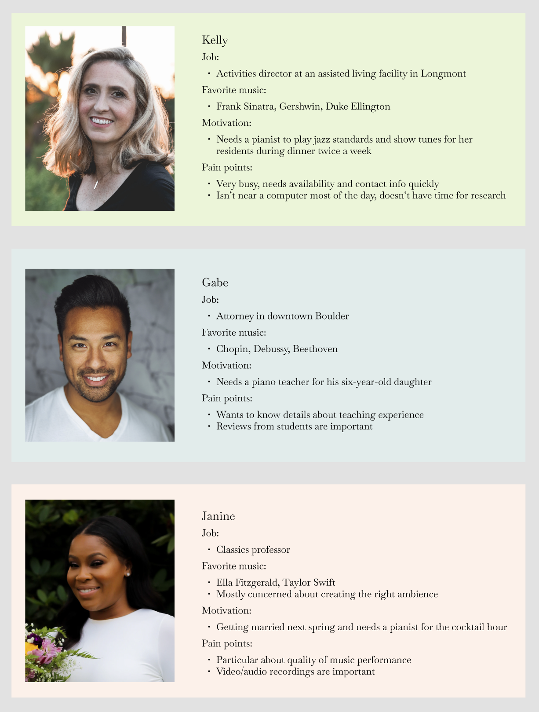
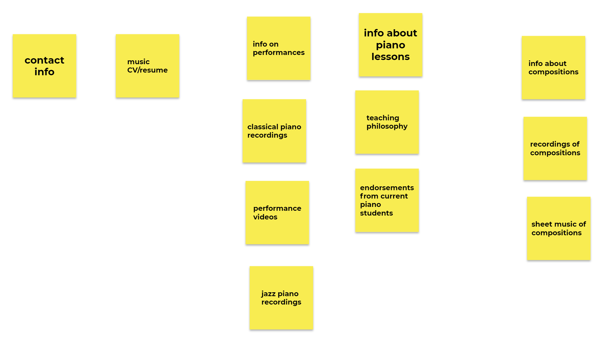

Craig Schwartz, a musician in Boulder, Colorado does not have a website.
He needs a website to promote his music
and connect with clients for piano performances and lessons.
Research

I made three personas based on Craig's existing clients and new clients he hopes to attract in the future.
From this exercise, I learned more about the needs of the website's users.
For example, reviews or testimonials from current students would be important to
Gabe, a dad looking for a piano teacher for his daughter.
So I added a page for reviews and testimonials.
Next, I did an open card sort with a group of potential users of the site.
This was done remotely using Jamboard.
Most of the participants grouped “music compositions” and “recordings of compositions” together.
So instead of making one page for all of the audio and video recordings, I put the recordings of Craig's compositions
alongside the corresponding sheet music.

I started with low fidelity wireframes of the pages showing the basic layout and functionality of each page.
I got feedback from the client and turned the low fidelity wireframes into high fidelity wireframes.
Accessability
Making music accessable to everyone is an important part of Craig's teaching philosophy,
so I conducted an accessability analysis on the site using WAVE.
Based on the WAVE results, I added semantic HTML tags and explicit headings to the site
to make it to interpret through a screen reader.